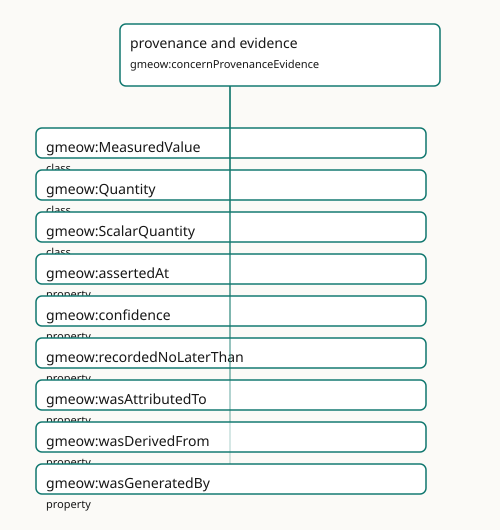

provenance and evidence
- IRI: https://blackcatinformatics.ca/gmeow/concernProvenanceEvidence
- CURIE:
gmeow:concernProvenanceEvidence
Attribution, derivation, confidence, evidence, and source lineage.

Participating Slices
- observations - GMEOW Observations Module
- provenance - GMEOW Provenance Module
- temporal - GMEOW Temporal — intervals, instants, temporal frames, time-scoped relations
Terms
| Term | Category | Definition |
|---|---|---|
gmeow:MeasuredValue |
class | An alias for gmeow:Quantity — the measured-value perspective on the same value×unit/frame×determinacy×provenance bundle (ScalarQuantity alias precedent). Equivalent to gmeow:Quanti |
gmeow:Quantity |
class | A universal scalar numeric value bundled with unit/frame, determinacy, and provenance — the synthesis of FRAME-GEN + DET-GEN + OBS (ScalarQuantity alias precedent). Equivalent to g |
gmeow:ScalarQuantity |
class | A scalar numeric value with a unit, determinacy model, and granularity — the entity-valued wrapper for literal observation results (temperatures, distances, counts, probabilities). |
gmeow:assertedAt |
property | The instant an agent observed or asserted the annotated claim (e.g. an email Date header or a vCard REV) — a witness that the fact held at that instant. Distinct from validity (val |
gmeow:confidence |
property | Confidence in a claim, in the closed interval [0,1], attached to the statement it qualifies. |
gmeow:recordedNoLaterThan |
property | A DERIVED upper bound (terminus ante quem) on when the annotated claim was committed to a record — typically taken from the modification time of its source carrier (gmeow:sourceMod |
gmeow:wasAttributedTo |
property | Ascribes responsibility for an enduring entity to an agent — authorship, ownership, or accountability. The endurant counterpart of gmeow:wasAssociatedWith (which ties an activity t |
gmeow:wasDerivedFrom |
property | Relates a derived thing to the thing it was derived from — e.g. a text extraction, summary, or embedding to its source; a commit to its parent commit; a trajectory to its sample st |
gmeow:wasGeneratedBy |
property | Relates an entity to the activity that produced it — the generation link from an enduring product back to its occurrent cause. The performing agent is reached transitively through |